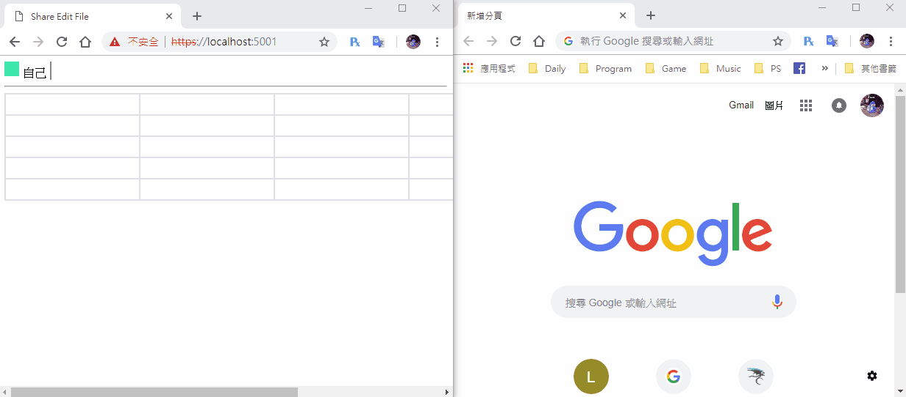

[鐵人賽Day24] 實作Web即時共同編輯文件 (4) - 幫編輯中的表格添加顏色
文章目錄
今天要來幫編輯中的表格更換顏色，顏色就是昨天做的使用者顏色，這次是要放到編輯的cell內，並且鎖住不讓其他人同時編輯。
幫編輯中的表格著色
我發現直接對表格誆著色會怪怪，所以改成表格背景著色，那麼就開始時做吧，我們前後端拆開來做，首先做後端。
後端部分
首先要來得先在後端的編輯動作中加入使用者，先來修改FileServie的EditFileCell的動作，加入修改使用者及表格預設鎖上的狀態，記得接收參數在多個user用來辨識目前修改人是誰。
public CellModel EditFileCell(string fileName, string cellName, string text,string user)
{
// 找出哪個file
var file = (from f in list where f.filename == fileName select f).FirstOrDefault();
// 找出哪個cell
var cell = (from c in file.textList where c.cellName == cellName select c).FirstOrDefault();
// 修改內容
cell.text = text;
// 加入使用者
cell.editor = user;
// 鎖住cell
cell.lockState = true;
return cell;
}
修改FileHub的EditText動作，只要把ConnectionId使用EditFileCell方法丟進Service裡，再多加個回傳使用者就行
public async Task EditText(string fileName, string cellName, string text)
{
var editText = _service.EditFileCell(fileName, cellName, text, Context.ConnectionId);
await Clients.All.SendAsync("ReceiveEditText", cellName, editText.text, editText.editor);
}
前端部分
我們只需要幫ReceiveEditText加些料就行，首先先判斷這個修改表格的是否為自己，不是的話就修改表格顏色及接收修改過的內容
connection.on("ReceiveEditText", function (cellName, text, user) {
var cell = document.getElementById(cellName);
// 判斷是否為自己
if (getQueryStringByName('id') != user){
cell.childNodes[0].value = text;
cell.childNodes[0].style.backgroundColor = document.getElementById(user).childNodes[0].style.backgroundColor;
}
});
這樣就完成一半了!!!再來就是解開顏色的事件
取消未編輯的表格顏色
這邊一樣前後端拆開來做
後端部分
一樣要先在FileServie新增方法CancelEditFileCell，內容是刪除編輯的使用者，並解鎖
public CellModel CancelEditFileCell(string fileName, string cellName)
{
// 找出哪個file
var file = (from f in list where f.filename == fileName select f).FirstOrDefault();
// 找出哪個cell
var cell = (from c in file.textList where c.cellName == cellName select c).FirstOrDefault();
// 加入使用者
cell.editor = null;
// 解鎖cell
cell.lockState = false;
return cell;
}
在來再FileHub新增CancelEditFileCell方法，裡面的動作比較簡單只是要取消編輯
public async Task CancelEditText(string fileName, string cellName)
{
var editText = _service.CancelEditFileCell(fileName, cellName);
await Clients.All.SendAsync("ReceiveCancelEditText", fileName, cellName);
}
前端部分
我們要再更換編輯表格時取消編輯的狀態，所以就是在cellLock裡面回傳取消編輯，比較要注意的是我們ID是放在td元素內，所以要像上一層元素取ID
connection.invoke('CancelEditText', 'TestFile', this.parentNode.id).catch(function (err) {
return console.error(err.toString());
});
其他人接收到後則把顏色恢復為透明
connection.on("ReceiveCancelEditText", function (fileName,cellName) {
var cell = document.getElementById(cellName);
cell.childNodes[0].style.background = 'transparent';
});
這樣就完成啦
DEMO

其實做到這邊還有很多地方需要修正，明天我們就把一些小問題一次做完，今天就這樣啦！！